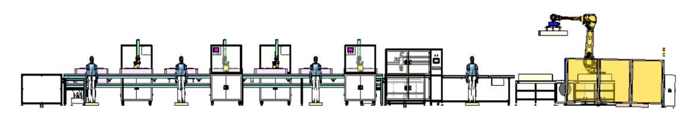
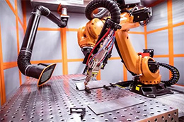
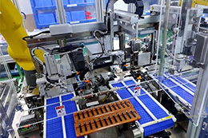
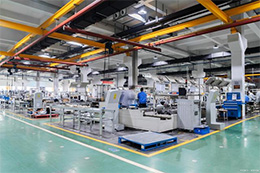
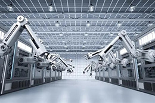

The application and development of modular design in the non-standard automation equipment industry. 1. What is non-standard equipment. Non-standard equipment refers to equipment that is not made in accordance with unified national standards and general specifications, but is customized for design and manufacture according to actual needs. It has the characteristics of special aircraft, small batches, multi-functional, multiple types, and high complexity.Where is the need to replace machines?

Against the background of automation equipment industry 4.0 and "Internet +", the future development and competition of CNC systems have undergone new reforms. In China, more competition will focus on how to use the advantages of the Internet to allow the computing power of CNC systems to be infinitely expanded, and through the understanding of emerging business models such as the sharing economy, it is not easy to reasonably create functions that are appropriate to them.

Let’s start with competition. There are competitions in all walks of life. The competition in the non-standard automation industry is different from other industries and is a comprehensive and three-dimensional competition.First, talent competition: Since enterprises in the non-standard automation industry do not have core technologies and only core technical personnel, many people may not agree with this statement, especially business owners. Don’t believe in evil, please respect core technical personnel.Some bad

We literally understand the definition of non-standard automation: non-standard means non-standard, which means it does not mean that it is implemented completely in accordance with the standards stipulated by the state, but it is based on serving customers. This is a very important prerequisite, so separate development is required.The most important direction of the development of non-standard equipment is to meet the customer's usage habits and usage pre-use

As Zhang Ailing said, people always have their own feelings when they reach a young age, but some people remember them, and some people ignore them and forget them.I always don’t want to be the one who forgets my own feelings, so I want to write something.I have been in the automation industry for some years, so I wrote about my personal understanding and prospects for automation, which is used to attract attention: I have seen some online recently